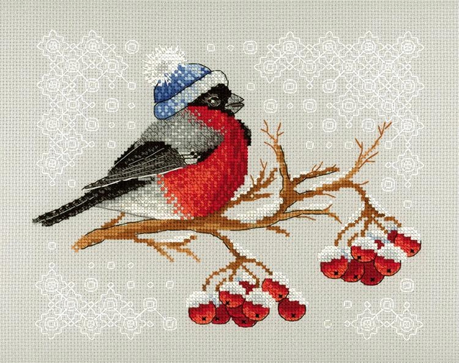
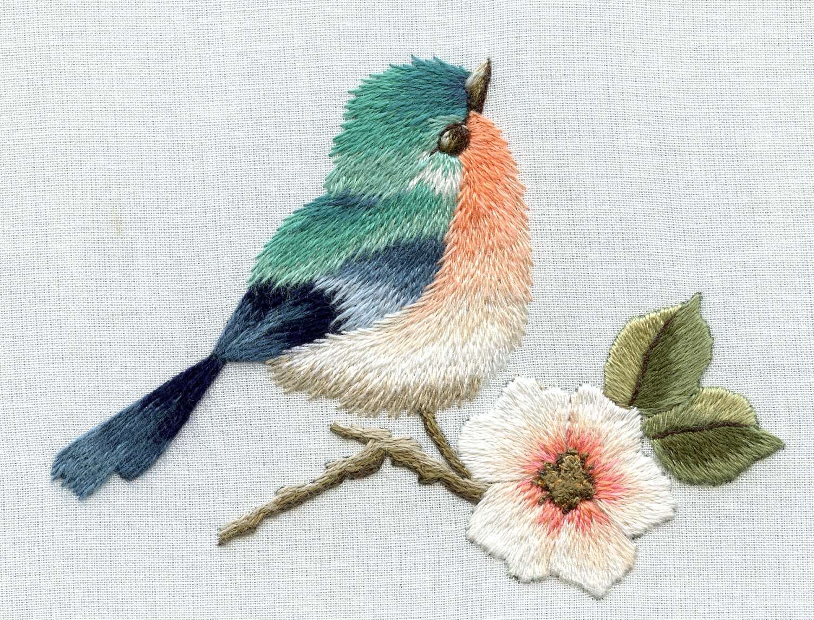
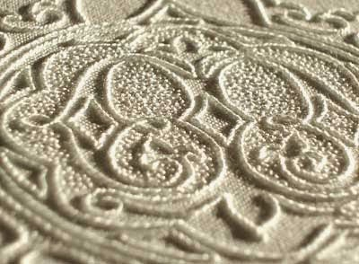

Czym jest hafciarstwo?
Hafciarstwo jest dziedziną włókiennictwa i odnosi się zarówno do ręcznej jak i maszynowej formy. Sztuka ta polega na ozdabianiu tkanin lub innych materiałów za pomocą igły i nici. Swoje początki ma aż w V wieku p.n.e., a wyroby hafciarzy były wtedy uznawane za artykuły luksusowe. Około XVI wieku haftowanie zaczęło być postrzegane również jako zajęcie amatorskie, a w późniejszym okresie zaczęto używać do tego tamborka - dwóch obręczy znacznie ułatwiających to zajęcie. Natomiast w XIX wieku rozpowszechnione zostało hafciarstwo maszynowe.
Haftowanie jako hobby
Hatf, mimo bycia postrzeganym raczej jako zajęcie osób starszych, jest idealnym hobby dla ludzi pasjonujących się robótkami ręcznymi. Jeśli szukasz nowego sposobu na spędzanie czasu, warto rozważyć te opcję. Może umilić chłodne zimowe wieczory czy też deszczowe dni - wystarczy zaparzyć ulubioną herbatę, włączyć ulubiony serial i zacząć tworzyć! Pozwala na tworzenie przepięknych dzieł, które można powiesić na ścianie, dać bliskiej osobie w prezencie czy naszyć na ubrania.
Wbrew pozorom nie trzeba być uzdolnionym artystycznie, żeby hafotwać. W tym wypadku najważniejsza jest praktyka - wiadomo, że pierwsze projekty nie wychodzą idealnie. Jednak z każdą koleją próbą zauważysz poprawę. Jeśli martwi cię to, że nie potrafisz narysować pięknego obrazu do wykonania, na to również jest rozwiązanie! W obecnych czasach sposobów na pozyskanie wzorów jest mnośtwo, co znajdziesz w zakładce "Wzory".
Istnieje wiele rodzajów haftu, więc każdy znajdzie coś dla siebie.
Najpopularniejszym z nich jest haft krzyżykowy - polega na wykonywaniu rzędów kolorowych krzyżyków na specjalnej kanwie zgodnie z wzorem. Zazwyczaj właśnie od niego zaczynają początkujący - potrzeba tylko znajomości jednego ściegu, a wzory są łatwo dostępne. Aczkolwiek nie jest dobrym wyborem dla osób nieprzepadających za monotonnością.
Haft płaski sprawdzi się dla tych, którzy nie lubią ściśle trzymać się wytycznych - pozwala nam na więcej "swobody". Zawiera w sobie wiele różnych ściegów, przez co każdy znajdzie coś dla siebie i możemy nadać teksture naszemu dziełu. W razie pomyłki można ją szybko "zamaskować", podczas gdy w hafcie krzyżykowym najlepszym wyjściem jest wyciągnięcie nici i zaczęcie od nowa.
Bardziej wprawione osoby mogą spróbować "malowania igłą" (needle painting) - metody pozwalającej na tworzenie realistycznych obrazów przypominających te namalowane. Tym sposobem zazwyczaj używa się pojedynczej nitki, dzięki czemu tworzenie przejść między kolorami jest łatwiejsze i mniej widoczne.
Nićmi można tworzyć także trójwymiarowe dzieła haftem reliefowym, jednak wymaga on więcej praktyki.
